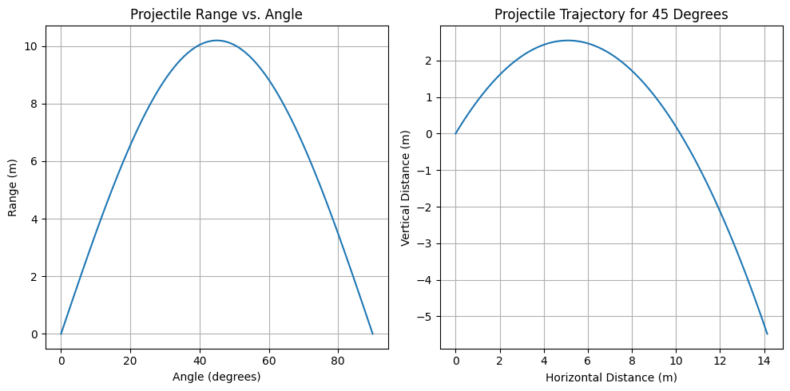

Problem 1
Investigating the Range as a Function of the Angle of Projection
Investigating the Range as a Function of the Angle of Projection
Introduction
Projectile motion is one of the most fundamental topics in classical mechanics, offering insights into the interplay between forces, motion, and trajectory prediction. The study of how the range of a projectile varies with its launch angle is crucial in both theoretical physics and practical applications. Whether analyzing the optimal angle for a long jump, the flight of a basketball shot, or the trajectory of artillery, understanding projectile motion provides a strong foundation for problem-solving in dynamics.
Motivation
The motion of a projectile follows a parabolic path, governed by Newton’s laws of motion and the equations of kinematics. While the problem seems straightforward—determine how the range depends on the launch angle—it encompasses a rich mathematical structure. The trajectory is influenced by several key parameters: initial velocity, gravitational acceleration, and launch height, each of which can significantly alter the resulting motion.
By systematically varying the launch angle and analyzing the corresponding range, we can identify patterns that lead to deeper insights into the underlying physics. This study not only highlights the interplay of linear and quadratic relationships in motion equations but also offers practical implications in engineering, sports science, and aerodynamics.
Understanding the dependencies in projectile motion enables precise predictions and optimizations, making it a cornerstone of both academic inquiry and technological advancements.
Theoretical Foundation
Newton's Laws and Equations of Motion
To understand projectile motion, we begin with Newton’s Second Law of Motion:
For a projectile moving under the influence of gravity alone, the only force acting is the gravitational force:
Since force is the product of mass and acceleration, we write the equations of motion separately for horizontal and vertical components:
- Horizontal Motion:
- There is no acceleration in the horizontal direction (assuming no air resistance), meaning velocity remains constant:
$$ x(t) = v_0 \cos \theta \cdot t $$
- Vertical Motion:
- The only force acting is gravity, leading to constant acceleration in the downward direction:
$$ y(t) = v_0 \sin \theta \cdot t - \frac{1}{2} g t^2 $$
Deriving the Time of Flight
The projectile reaches the ground when \( y = 0 \), solving for time:
Factoring out \( t \):
Ignoring the trivial solution \( t = 0 \), we solve for \( t_f \):
Deriving the Range Equation
The range \( R \) is the horizontal distance traveled during \( t_f \):
Substituting \( t_f \):
Using the identity \( 2 \sin \theta \cos \theta = \sin 2\theta \):
-This equation reveals that the range depends on the square of the initial velocity and the sine of twice the launch angle. The maximum range occurs when \( \sin 2\theta \) is maximized, which happens at \( \theta = 45^\circ \).
Effect of Initial Conditions
Variations in initial conditions, such as changes in \( v_0 \) or \( \theta \), lead to different trajectories. For instance:
-
Increasing \( v_0 \) results in a proportionally larger range.
-
A small launch angle leads to a short, flat trajectory, while a large angle results in a steep, high trajectory with a shorter range.
-
At \( 45^\circ \), the projectile achieves the maximum horizontal displacement.
This derivation forms the theoretical basis for studying projectile motion and optimizing real-world applications.
Analysis of the Range
1. Dependence of Horizontal Range on Launch Angle
The horizontal range \( R \) of a projectile launched from the ground with an initial velocity \( v_0 \) is given by:
Key Observations:
- The range is maximized at \( 45^\circ \), where \( \sin 2\theta \) reaches its peak value of 1.
- The function is symmetric, meaning that \( \theta = 30^\circ \) and \( \theta = 60^\circ \) yield the same range.
- At \( \theta = 0^\circ \) and \( \theta = 90^\circ \), the range is zero because the projectile either moves entirely horizontally or vertically.
2. Effect of Initial Velocity (\( v_0 \))
Since the range formula has a quadratic dependence on \( v_0 \):
- Doubling \( v_0 \) results in a fourfold increase in range.
- This is significant in applications like sports science (e.g., long jump, soccer kicks) and aerospace engineering (e.g., missile trajectories).
3. Effect of Gravitational Acceleration (\( g \))
Since \( g \) appears in the denominator:
- A lower gravitational field increases the projectile's range (e.g., on the Moon or Mars).
- In higher gravity environments, projectiles travel shorter distances.
- This has implications for interplanetary physics and ballistics research.
4. Combined Effects of Parameters: Heatmap & Isocontour Analysis
A heatmap can visualize how range changes with both \( v_0 \) and \( \theta \). Similarly, isocontour maps can show regions of optimal launch conditions.
5. Summary of Key Findings
- \( 45^\circ \) is the optimal launch angle for maximum range.
- Increasing \( v_0 \) significantly boosts range due to quadratic dependence.
- Lower gravity enhances range, while higher gravity shortens it.
- Visual tools like heatmaps and isocontours help determine the best launch conditions.
This analysis provides key insights into projectile motion, making it applicable in engineering, sports, and aerospace research.
Develop a computational tool or algorithm to simulate projectile motion.
import numpy as np
import matplotlib.pyplot as plt
def projectile_range(v0, g=9.81):
angles = np.linspace(0, 90, 100)
ranges = (v0**2 * np.sin(2 * np.radians(angles))) / g
return angles, ranges
def projectile_trajectory(v0, theta, g=9.81, t_max=2):
t = np.linspace(0, t_max, num=100)
x = v0 * np.cos(np.radians(theta)) * t
y = v0 * np.sin(np.radians(theta)) * t - 0.5 * g * t**2
return x, y
# Example with v0 = 10 m/s
angles, ranges = projectile_range(10)
plt.figure(figsize=(10, 5))
# Range Plot
plt.subplot(1, 2, 1)
plt.plot(angles, ranges)
plt.xlabel('Angle (degrees)')
plt.ylabel('Range (m)')
plt.title('Projectile Range vs. Angle')
plt.grid()
# Trajectory Plot for a Specific Angle
theta_example = 45
x, y = projectile_trajectory(10, theta_example)
plt.subplot(1, 2, 2)
plt.plot(x, y)
plt.xlabel('Horizontal Distance (m)')
plt.ylabel('Vertical Distance (m)')
plt.title(f'Projectile Trajectory for {theta_example} Degrees')
plt.grid()
plt.tight_layout()
plt.show()

Limitations
While the model provides valuable insights into projectile motion, some limitations must be considered:
-
Air Resistance is Ignored: The model assumes a vacuum, meaning drag forces are not accounted for. In real-world applications, air resistance significantly affects both range and trajectory.
-
Constant Gravitational Field: The model assumes a uniform gravitational field, which is a reasonable assumption for short-range projectiles but becomes inaccurate for high-altitude launches or planetary-scale motions.
-
Flat Terrain: The analysis does not account for uneven ground or launch/landing height differences, which are crucial in many practical applications (e.g., artillery, sports, aerospace).
-
Future refinements could include computational fluid dynamics (CFD) models for drag effects and adjustments for varying gravitational conditions in extraterrestrial applications.
Isocontour Map for Range Analysis
Develop a computational tool or algorithm to simulate projectile motion.
# Isocontour
import numpy as np
import matplotlib.pyplot as plt
v0_values = np.linspace(5, 50, 50)
angles = np.linspace(0, 90, 50)
g = 9.81
def compute_range(v0, theta, g=9.81):
return (v0**2 * np.sin(2 * np.radians(theta))) / g
range_matrix = np.zeros((len(v0_values), len(angles)))
for i, v0 in enumerate(v0_values):
for j, theta in enumerate(angles):
range_matrix[i, j] = compute_range(v0, theta, g)
plt.figure(figsize=(10, 6))
contour = plt.contourf(angles, v0_values, range_matrix, cmap='plasma', levels=20)
cbar = plt.colorbar(contour)
cbar.set_label('Range (m)')
plt.xlabel('Launch Angle (degrees)')
plt.ylabel('Initial Velocity (m/s)')
plt.title('Projectile Range Heatmap (Velocity vs. Angle)')
plt.grid(True)
plt.show()